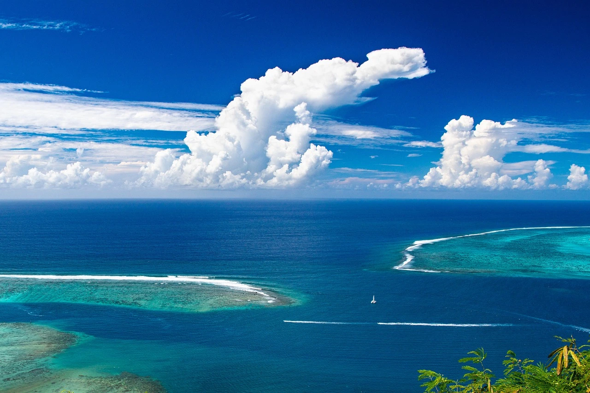

Океани — серце планети, що покриває 71% поверхні та ховає 97% води! 😮 Лише 5% глибин досліджено, але вони вже вражають. Від Маріанської западини до сміттєвих плям — дізнайтесь про 5 океанів! Готові пірнути? 🚢
Велич океанів: Факти, що дивують 🌍
Тихий океан — найбільший, його площа вчетверо більша за Місяць! Тут лежить Маріанська западина, глибиною 11 км! 😲
Атлантичний океан славиться Гольфстрімом, що зігріває Європу, і Бермудським трикутником! 🛩️
Північний Льодовитий — найменший, але його крижані глибини ховають унікальні екосистеми! ❄️
Таємниці під водою: Від рифів до хребтів 🪸
Великий Бар’єрний риф видно з космосу! Корали — це тварини, а не рослини! 🌌
Серединно-океанічний хребет — найдовший гірський ланцюг світу, 65 тисяч км! 🏔️
Вогняне кільце в Тихому океані — зона з більшістю вулканів планети! 🌋
Життя океанів: Від китів до дельфінів 🐳
Синій кит — найбільша тварина, до 30 метрів! Живе в океанах! 🐋
Дельфіни мають «імена» — унікальні свисти! 🐬
Але люди вбивають 100 мільйонів акул щороку, а медузи процвітають у брудних водах! 🦈
Екологічна криза: Пластик і забруднення 🗑️
8–13 мільйонів тонн пластику потрапляє в океани щороку, формуючи сміттєву пляму втричі більшу за Францію! 😱
Сонцезахисні креми руйнують корали, а стоки викликають цвітіння водоростей! ☠️
Лише 5% океанів досліджено, але без захисту вони стануть пустелею! 🌊
Дізнайтесь більше у нашому відео! 🎥
Хочете знати, скільки океанів перетинає екватор? Перегляньте вікторину на YouTube-каналі Знання для всіх! 👇
Перевірте свої знання! 🚢
Який факт про океани вас здивував? Напишіть у коментарях до нашого відео! 💬
Дізнайтесь більше на нашому сайті та підпишіться на канал, щоб не пропустити нові факти! 🌟